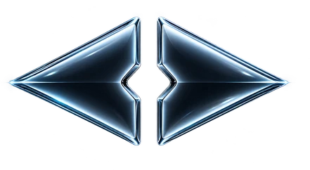
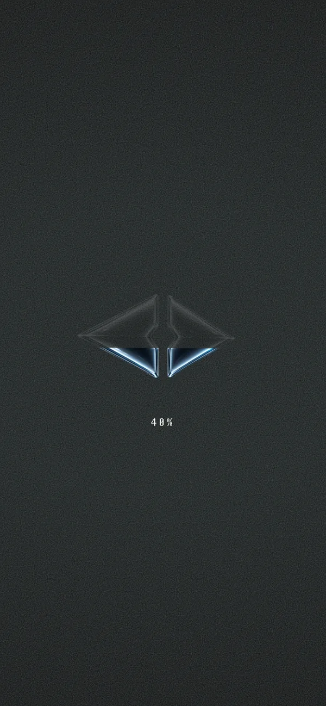
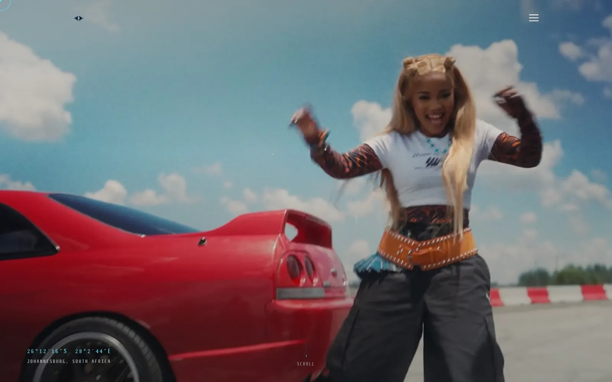
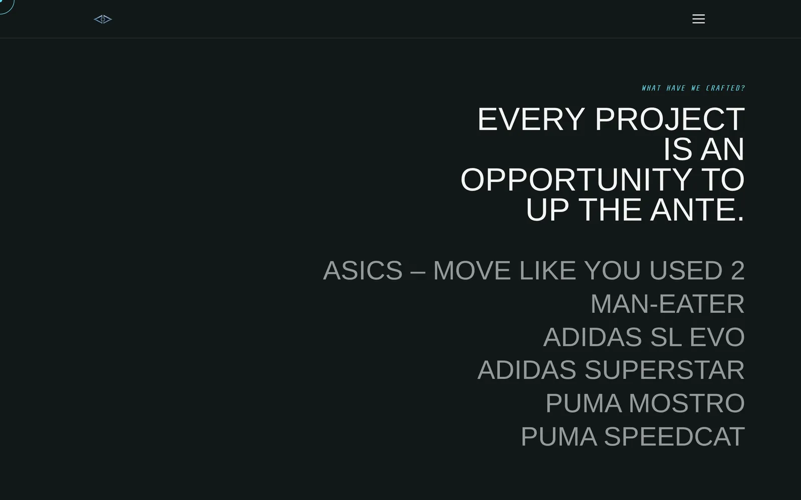
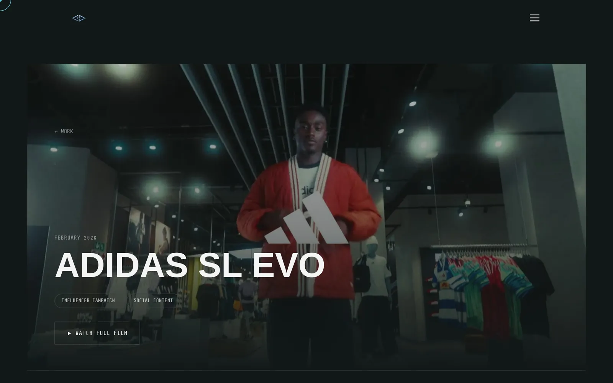
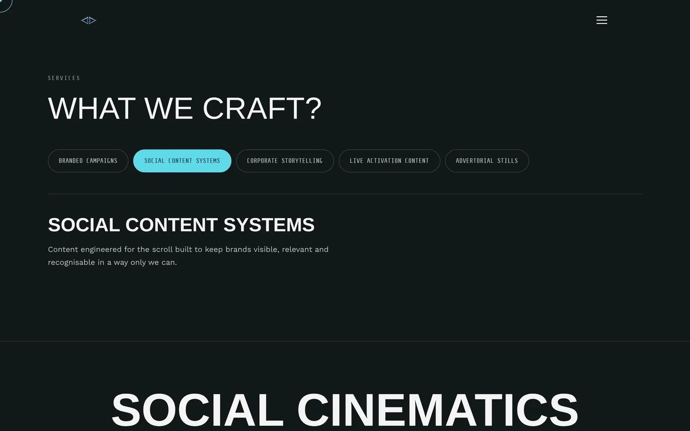
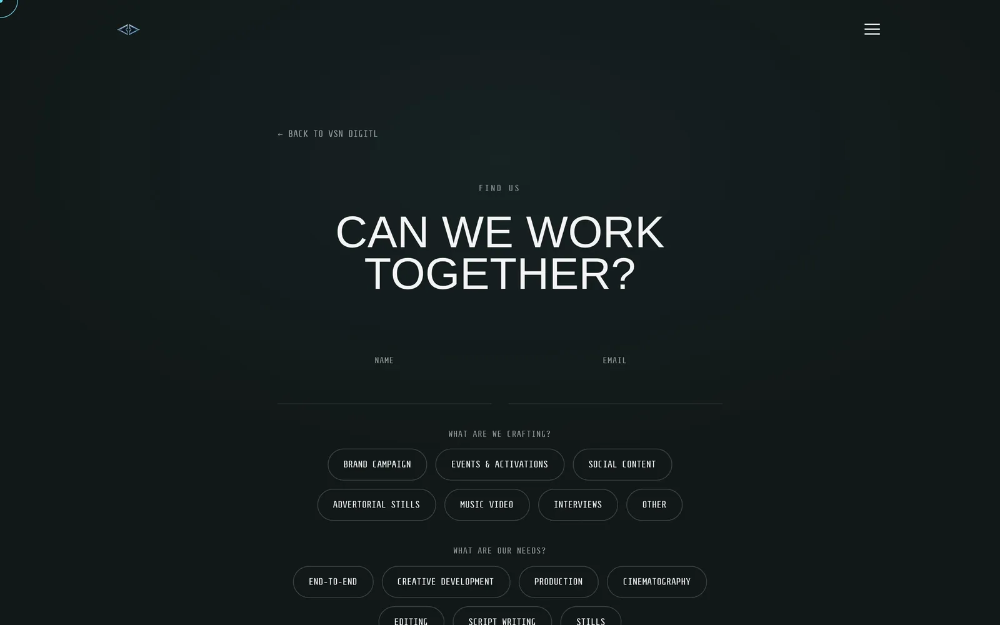

Case study · Web Development · Well Dunn Group
VSN DIGTL
A film studio's website should feel like one of its films.


01The brief
"A strictly digital creative production house" needed a site that feels like its films: dark, confident and led by video.
I built it section by section to VSN's Brand Bible and their homepage copy deck, using their locked words, their fonts (Steps Mono, Work Sans and Anton) and no template or website builder. Every line is hand-written, so the site does exactly what the brand needs and nothing it doesn't.
02What I built

The full-screen showreel plays behind the page as the Johannesburg coordinates fade in, then carries on behind "What are we?" and "Why we exist?". Scroll past the footer and it loops straight back to the top with no visible jump.

Six campaigns in a list. Hover one and its film plays behind the list. Click and it opens a full project page.

One for each campaign, each led by its own film.

A capability explorer: tap a service to see what it covers.

On the homepage and the Get in touch page, sending straight to VSN's inbox with a confirmation screen.
- Loading screenThe chrome mark fills up as a counter runs to 100%. It plays once per visit.
- Talent page"Expectation subverters": the team's names and roles over the team film.
- Brands strip and navigationA scrolling marquee of the brands VSN has worked with, recoloured to match the site, and a spinning chrome logo that always takes you home.
03Making it fast
Video-heavy sites are slow by default. These fixes kept it cinematic on a phone signal.
- 850 KB → 44–78 KBper page, by moving the fonts into small shared files
- 2.7 MBa lighter showreel just for phones
- 90 MB → on demandthe Work page used to download every film at once. Now films load only when hovered or opened, with still frames while they load
- No more black filmsfixed films that stayed black in some browsers by loading them one at a time
04Working with the client
We built it in agreed stages, with progress notes after every session, and turned around VSN's final round of changes the same week. Once VSN gives the final go-ahead, the code is handed over for their own hosting.
The footage and brand logos on the site belong to VSN and their clients.